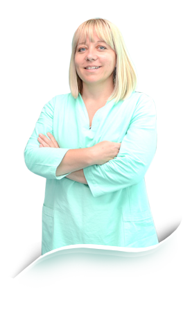

Aličković dr. Amra
specijalista oralne hirurgije
Ul. Azize Šaćirbegović bb, Sarajevo;
Gsm.: 00 387 61 37 49 67; Tel: +387 (0) 33 64 50 04;
E-mail: amraamric@hotmail.com
specijalista oralne hirurgije
Ul. Azize Šaćirbegović bb, Sarajevo;
Gsm.: 00 387 61 37 49 67; Tel: +387 (0) 33 64 50 04;
E-mail: amraamric@hotmail.com

Poštovani klijenti,
Aličković dr. Amra rođena u Sarajevu 1973. godine. Završila Prvu gimnaziju i Stomatološki fakultet Univerziteta u Sarajevu, gdje je i specijalizirala oralnu hirurgiju i okončala Postdiplomski studij s prosječnom ocjenom 10,00.
Učesnik je brojnih bosanskohercegovački stomatoloških naučnih skupova s međuanrodnim akrakterom na kojima je kao koautor predstavila radove: "Timski pristup u liječenju malignoma mandibule" i Gingivektomija termokauterom u predprotetskoj pripremi".
U Medicinskom žurnala 2011. godine, kao koautor, objavila članak pod nazivom: GENETICAL ASPECTS OF HYPODONTIA AND MICRODONTIA AND PROSTETHETIC RESTORATION.
Autor je više tekstova u specijaliziranim dodacima dnevnih listova iz oblasti stomatologije.
Govori engleski jezik.
Misija
Stomatologija mi nije izbor po rođenju i porodičnoj tradiciji, nego vlastiti odabir zanimanja koje se voli.
Moja je misija osloboditi ljude straha od stomatologa i pomoći im da za svoj novac dobiju tretman kakav zaslužuju i osmijeh kakav sanjaju.
Dođite i uvjerite se!
bos|eng